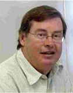

Who we are
Lateral Economics is a network of professionals with a wealth of experience and expertise in economic reform and public policy. We draw on a range of people from a range of professional backgrounds to meet clients' needs.
Our principals are:
Nicholas Gruen
Lateral Economics' CEO Nicholas Gruen is a widely published policy economist, entrepreneur and commentator. He has advised Cabinet Ministers, sat on Australia's Productivity Commission and founded Lateral Economics and Peach Financial.
He is Visiting Professor at Kings College London and Adjunct Professor at UTS. He chairs the Open Knowledge Foundation (Australian Chapter) and is Patron of the Australian Digital Alliance, which brings together Australia's libraries, universities, and major providers of digital infrastructure such as Google and Yahoo. He is a member of the Council of the National Library of Australia.
He was Chair of The Australian Centre for Social Innovation until 2016 and Chair of the Australian Government's principal innovation advisory body, Innovation Australia, until 2014.
He was second shareholder and Chairman of successful San Francisco based startup, data analytics crowdsourcing platform
Kaggle, subsequently acquired by Google in March 2017. He is an angel investor in various other Australian and international startups including
Breezedocs,
Slant.co,
HealthKit and
Lendable.
He was a member of a review of pharmaceutical patent extensions in 2013. In 2009, he chaired Australia's
internationally acclaimedGovernment 2.0 Taskforce. In 2008, he was a member of
a major review into Australia's Innovation System.
He has a BA (Hons First Class) in History (1981) and a PhD in Public Policy from the ANU (1998), and an LLB (Hons) from the University of Melbourne (1982).
Alex Coram
Alex Coram is Professor (Emeritus) at the University of Western Australia. He was previously Winthrop Professor of Political Economy at the University of Western Australia and professor of economics at the Aberdeen Business School. He has held the Helen Sheridan chair in Economics at the University of Massachusetts and is a visiting fellow at the University of Massachusetts.
He has worked for the Department of Infrastructure in Victoria on models of city development and on providing training programmes for senior management. He has consulted for law firms on problems of contracting. He has also consulted on energy problems and nuclear power.
He specialises in solving non-standard mathematical problems, particularly those involving applications of optimisation theory to problems in:
- public sector management
- institutional design
- optimal contracting
- the dynamics of energy systems and
- environmental problems.
He has published two books and approximately 50 papers.
He is currently working on problems of nuclear energy and the dynamics of energy use under constraints imposed by emissions reduction.
Philip Hagan

Philip Hagan partners with Lateral Economics on selected projects. He is also principal of AustralAsia Economics. He is an economist with extensive experience in policy making in the public sector, having worked in senior positions in both Federal and State Governments. After a long career at the Industries Assistance Commission, he was an Assistant Secretary with its successor body the Industry Commission (which is now the Productivity Commission) and also with the Health Department. He was also Deputy CEO of the South Australian Development Council, where he worked on economic development issues. Mr Hagan now works as a consultant to the public and private sectors.
Philip's expertise and background is in microeconomics. He also has extensive experience in the field of health and ageing. He also worked for a period developing quantitative models of the Australian economy and is familiar with Australian economic statistics. Mr Hagan holds bachelor's degrees in science and economics and an MBA and is an Adjunct Research Fellow with the University of South Australia.